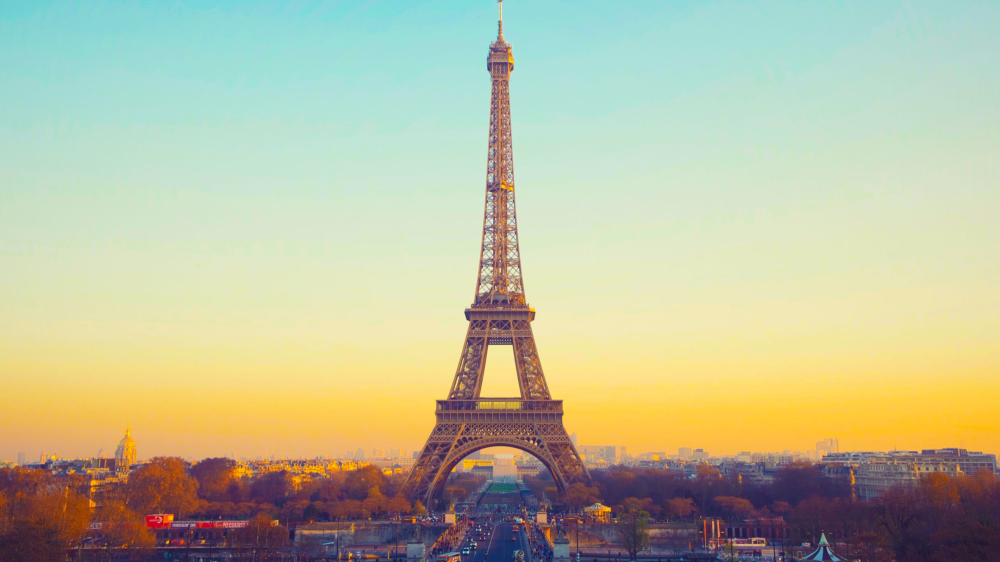
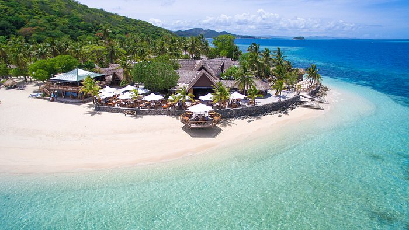
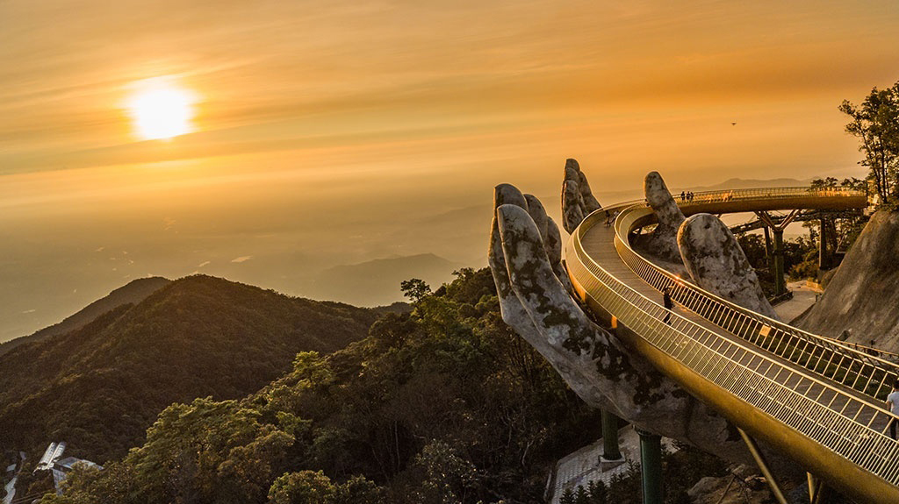

Địa điểm nổi bật
Tháp Eiffel

Tháp Eiffel, biểu tượng của Paris và Pháp,
là một kiệt tác kiến trúc được xây dựng vào
năm 1889. Với vẻ đẹp lộng lẫy và sức hút
vô cùng mạnh mẽ.
Đảo Fiji

Đảo Fiji, tọa lạc ở Thái Bình Dương, là
điểm đến nổi tiếng với bãi biển tuyệt đẹp,
nước biển trong xanh và văn hóa đa dạng,
hấp dẫn du khách từ khắp nơi.
Cầu Vàng

Cầu Vàng ở Đà Nẵng là biểu tượng nổi
bật của du lịch Việt Nam với cấu trúc
độc đáo và vẻ đẹp tuyệt vời, thu hút
du khách khắp nơi trên thế giới.